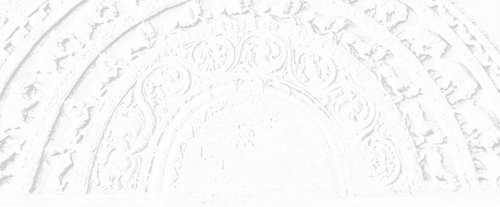

Sermon 28
Namo tassa bhagavato arahato sammāsambuddhassa
Namo tassa bhagavato arahato sammāsambuddhassa
Namo tassa bhagavato arahato sammāsambuddhassaEtaṁ santaṁ, etaṁ paṇītaṁ,
yadidaṁ sabbasaṅkhārasamatho sabbūpadhipaṭinissaggo
taṇhakkhayo virāgo nirodho nibbānaṁ.1“This is peaceful, this is excellent,
namely the stilling of all preparations, the relinquishment of all assets,
the destruction of craving, detachment, cessation, extinction.”
With the permission of the Most Venerable Great Preceptor and the assembly of the venerable meditative monks. This is the twenty-eighth sermon in the series of sermons on Nibbāna.
Right view, the first factor of the noble eightfold path, is defined as the knowledge of all the four noble truths, namely that of suffering, its arising, its cessation, and the path leading to its cessation. This is a pointer to the fact that some understanding of cessation, or Nibbāna, is essential for the practice of the path.
According to a discourse among the Twos of the Aṅguttara-nikāya, there are two conditions for the arising of this right view:
Dve ’me, bhikkhave, paccayā sammādiṭṭhiyā uppādāya. Katame dve? Parato ca ghoso yoniso ca manasikāro.2
Monks, there are these two conditions for the arising of right view. Which two? Hearing from another and radical reflection.
Strictly speaking, yoniso manasikāra, or ‘radical reflection’, is attention by way of source or matrix. The deeper dimensions of its meaning would have come to light in our discussion of paṭicca samuppāda with reference to a quotation from the Mahāpadānasutta, in one of our earlier sermons. There we saw how the bodhisatta Vipassī went on reflecting from the very end of the formula of paṭicca samuppāda, of dependent arising, in reverse order and gradually arrived at the true source.3
Kimhi nu kho sati jarāmaraṇaṁ hoti, kiṁ paccayā jarāmaraṇaṁ? Jātiyā kho sati jarāmaraṇaṁ hoti, jātipaccayā jarāmaraṇaṁ.
What being there, does decay and death come to be? Conditioned by what, is decay-and-death? Birth being there does decay-and-death come to be, conditioned by birth is decay-and-death.
In this way, he directed his radical reflection gradually upwards, beginning from decay-and-death, and at last came to the saṁsāric vortex between consciousness and name-and-form, which we discussed at length. This is an illustration of the deepest sense of yoniso manasikāra as an attitude essential for seeing the law of dependent arising within one’s own experience.
By now we have already laid bare some first principles for the arising of this radical reflection in the form of similes like the magic show and the chess game. Those similes have illustrated for us the first principle that a thing originates from, and its ‘thingness’ depends on, the psychological responses and mental traits of the person concerned.
The magic show and the chess game have exposed the fact that the signs and symbols which we conceive to be out there owe their significance and symbolic nature to the deep-rooted psychological mainsprings of lust, hate and delusion.
It was while discussing how the Sūcilomasutta presents the question of radical reflection that we were forced to stop our last sermon. To the question of Yakkha Sūciloma as to the source of lust, hate, delight and terror, the Buddha replied that they arise ‘hence’, from ‘hence’ itself. In the Pāli verses the Yakkha’s questions kutonidānā, kutojā, kuto samuṭṭhāya met with the replies itonidānā, itojā, ito samuṭṭhāya from the Buddha’s side.4
This ito, ‘hence’, means from within one’s self. This is clear from the term attasambhūta, ‘self-begotten’, in the reply given by the Buddha. It is to illustrate this self-begotten nature that the Buddha brings in the similes of the banyan tree and the māluvā creeper. When the runners coming down from the branches of a banyan tree reach the ground and get rooted, after a time, it will be difficult to distinguish the original trunk of the tree from its offsprings. So also is the case with the parasitic māluvā creeper. When the seed of a māluvā creeper takes root in the fork of a tree and grows up, it not only kills the tree, but also overspreads it in such a way as to obscure its origin.
From these similes we can infer that the self-begotten nature of those psychological states are also generally overlooked or ignored. They are revealed only to radical reflection, to attention by way of source or matrix. That is why the Buddha emphasizes the need for discerning the true source. That it is an injunction directly relevant to the practice is clearly expressed in the last verse in the Sūcilomasutta.
Ye naṁ pajānanti yatonidānaṁ,
te naṁ vinodenti, suṇohi yakkha,
te duttaram ogham imaṁ taranti,
atiṇṇapubbaṁ apunabbhavāya.5And they that know wherefrom it springs,
They dispel it, listen, O! Yakkha.
They cross this flood so hard to cross,
Never crossed before, to become no more.
The commentary takes the term yatonidānaṁ in this verse as a reference to the second noble truth of craving. The term attasambhūta is explained as ‘arisen within oneself’, attani sambhūtā, but not much attention is given to it.6 However, if we are to elicit the deeper meaning of these lines, we have to take up for comment this term, occurring in the preceding verse.
We came across this term earlier, too, in our discussion of a verse in the Kosala Saṁyutta.7
Lobho, doso ca moho ca
purisaṁ pāpacetasaṁ
hiṁsanti attasambhūtā
tacasāraṁ va samphalaṁ.8Greed and hate and delusion too,
Sprung from within work harm on him
Of evil wit, as does its fruit
On the reed for which the bark is pith.
In this context, too, the term attasambhūta is mentioned. When we reflect deeply on the significance of this term, we are first of all reminded of the vortex simile we employed to explain the reciprocal relationship between consciousness and name-and-form in our discussion of the law of dependent arising as stated in the Mahānidānasutta at the very outset of this series of sermons.9
Attasambhūta, literally rendered, would mean ‘originating from oneself’. But this so-called oneself conceived as a unit or centre of activity, is actually based on a duality. The notion of a self is to be traced to an interrelation between two conditions, that is, the reciprocal relationship between consciousness and name-and-form, which we discussed earlier too.
Viññāṇapaccayā nāmarūpaṁ, nāmarūpapaccayā viññāṇaṁ,10 “dependent on consciousness is name-and-form, dependent on name-and-form is consciousness”. As the bodhisatta Vipassī understood through radical reflection, consciousness turns back from name-and-form, it does not go beyond, paccudāvattati kho idaṁ viññāṇaṁ nāmarūpamhā, nāparaṁ gacchati.
Here is a vortex, a turning round. The delusion or ignorance is the non-understanding of the reciprocal relationship between these two. The understanding of it is the insight into the true source of all defilements.
To hark back to our simile of the chess game, this non-understanding is like the split into two sides. The two friends quite amicably prepared the chess board and the pieces. But for them to play the game, there should be two sides. It is after this bifurcation and confrontation as two sides that the actual game starts, with its vicissitudes of winning and losing.
Preparations grow yielding the consequences of wish fulfilments and disappointments to the competitors. This is the norm underlying this bifurcation. So ignorance is the non-understanding of the fact that the basis of this attasambhava or springing up from within, namely, the dichotomy, is in fact a mutual interrelation between two conditions.
In other words, the ignorance which gives rise to those preparations that go to create the vortex between consciousness and name-and-form is the non-understanding of the mutual interrelation implicit in this vortical interplay. That is why one is instructed in insight meditation to reflect on preparations relating to name-and-form. An insight into those preparations reveals this mutual interrelation. There is such a dichotomy implicit in the term attasambhava.
The commentary explains the correlative yathonidānaṁ, ‘whence arising’, as a reference to taṇhā or craving. But it is actually an allusion to ignorance. The true source is non-understanding. That is why the Buddha, in presenting the formula of paṭicca samuppāda, went beyond craving and placed ignorance at the head of the series of twelve links.
Very often, the commentators mention this as a possible point of controversy. But the real reason for its precedence is the fact that ignorance is more primary than craving as a condition. It is more basic than craving. When one probes into the conditions for craving, one discovers ignorance as its root.
That is why, in stating the law of paṭicca samuppāda in the reverse order, the Buddha used the expression avijjāya tv’eva asesavirāganirodhā, etc., “with the remainderless fading away and cessation of ignorance” etc.11 It is with the cessation of ignorance that the entire series of conditions move in the opposite direction. So ignorance is primary as a condition.
We can explain this primacy in another way. Now upādāna is that grasping of the object of craving. Actually it signifies a holding onto something. What gives the impression that the object of craving is something that can be grasped is a lack of a deep understanding of the principle of duality.
Craving finds something to hold onto precisely because one presumes that there actually exists a thing to be grasped. That is how it gets object status. This way, we can explain the basic reason for the recurrent birth in saṁsāra as the non-understanding of the mutual interrelation between conditions. This sustains the notion of a duality.
There is a verse in the Mahāparinibbānasutta which throws more light on the meaning of the term attasambhava. The verse, which is found also in the section on the Eights in the Aṅguttara Nikāya, as well as in the Udāna, runs as follows:
Tulam atulañ ca sambhavaṁ
bhavasaṅkhāram avassajī munī
ajjhattarato samhāhito
abhindi kavacam iv’attasambhavaṁ.12That preparation for becoming,
The Sage gave up,
Whence arise an ‘equal’ and an ‘unequal’,
Inwardly rapt and concentrated,
He split like an armour
The origin of self.
At the spot called cāpāla cetiya the Buddha renounced the preparations pertaining to the life span and declared that he will attain parinibbāna three months hence. There was an earth tremor immediately afterwards and the Buddha uttered this paean of joy to explain its significance.
However, this verse has puzzled many scholars, both eastern and western. The commentators themselves are in a quandary. They advance alternative interpretations, particularly in connection with the riddle-like terms tulam atulaṁ as evidenced by the commentaries to the Dīgha Nikāya and Aṅguttara Nikāya.13
According to the first interpretation given, tulaṁ stands for whatever pertains to the sense-sphere, and atulaṁ refers to the fine-material and immaterial spheres. The second interpretation, prefixed by an ‘or else’, athavā, takes tulaṁ to mean both the sense-sphere and the fine-material sphere and atulaṁ to refer only to the immaterial sphere. In a third interpretation, tulaṁ is taken to mean ‘of little karmic result’, and atulaṁ to mean ‘of great result’.
A fourth interpretation tries to tackle the difficult term in a different way altogether: ’tulan’ti tulento tīrento, ’atulañ ca sambhavan’ti nibbānañ ceva sambhavañ ca. “Tulaṁ means comparing, determining, atulañ ca sambhavaṁ means Nibbāna and becoming.” Here the word tulaṁ is presumed to be a present participle.
To add to the confusion, Nettippakaraṇa advances yet another interpretation.14 ’Tulan’ti saṅkhāradhātu, ’atulan’ti nibbānadhātu, “tulaṁ means saṅkhāra-element, atulaṁ means Nibbāna-element.”
It seems, however, that we have to approach the whole problem from a different angle altogether. The twin term tulam atulaṁ most probably represents the principle of duality we have discussed at length in this series of sermons. Tulaṁ and atulaṁ in a pair-wise combination convey the idea of equality and inequality as antonyms.
The phrase tulam atulañ ca sambhavaṁ is suggestive of that dichotomy which forms the basis of the self idea. Attasambhava or the origin of the self-notion is traceable to this dichotomy, which is like the two friends confronting each other in a game of chess. The two sides of the game may be taken as two halves of the same thing, standing opposite to each other. This is the ‘tragi-comedy’ of the situation. It is on these two halves or this dichotomy that the origin of the notion of self is based.
A clear enunciation of this truth is found in the Sutta Nipāta. For instance, the following verse of the Māgandiyasutta brings out the principle of dichotomy rather rhetorically:
’Saccan’ti so brāhmaṇo kiṁ vadeyya
’musā’ti vā so vivadetha kena
yasmiṁ samaṁ visamañ cāpi natthi
sa kena vādaṁ paṭisamyujeyya.15What could that Brahmin speak of as ‘truth’,
How could he debate calling something ‘false’,
By what criterion could he, in whom there is no distinction
Between equal and unequal, join issue in a debate?
We come across a similar verse in the Attadaṇḍasutta of the Sutta Nipāta.
Na samesu na omesu,
na ussesu vadate muni
santo so vītamaccharo
nādeti na nirassati.16The sage does not grade himself,
Among equals, inferiors or superiors,
Being at peace and with selfishness gone,
He neither takes up nor throws away.
Here again the issue is the triple conceit. It is by dispelling conceit that the sage entertains no inclinations to grade himself among equals, inferiors or superiors. Peaceful and unselfish as he is, he neither acquires nor rejects. Here we see a reference to that dichotomy.
The same idea comes up in another guise in the following verse of the Tuvaṭakasutta of the Sutta Nipāta, which can be an incentive to the recollection of peace, upasamānussati.
Ajjhattaṁ eva upasame,
nāññato bhikkhu santiṁ eseyya
ajjhattaṁ upasantassa
natthi attaṁ, kuto nirattaṁ.17Let the monk inwardly calm himself,
Let him not seek peace from outside,
To one who is inwardly calm,
There is nothing taken up or rejected.
We came across the two terms attaṁ nirattaṁ earlier too, in our discussion of a verse in the Duṭṭhaṭṭhakasutta.18 There, the line attaṁ nirattaṁ na hi tassa atthi meant the absence of the idea of taking up and rejecting in an arahant.
Very often scholars interpret the term attaṁ in this context as ‘self’, which in our opinion is incorrect. The phrase nādeti na nirassati gives a clear hint as to the etymology of this term. It is derived from dā prefixed by ā, giving ādatta, which by syncopation becomes ātta, which again by shortening of the vowel comes as atta. Niratta is derived from nirassati.
These two terms, suggestive of a duality, remind us of the water pump we mentioned in our discussion of the vortex.19 There is nothing really automatic even in a water pump, which takes in and throws out. Due to these two aspects in the mechanism of a water pump, we call it a unit. From the point of view of a water pump, it is capable of performing both functions. It is from this point of view that we attribute a unitary significance to it. In this very concept of a unit, one can discern the delusion involved.
Delusion is the apex of the vicious triangle greed, hate and delusion. Greed and hate are the two feelers directed from the apex delusion. Though we regard them as two functions, the taking in and throwing out are simply two aspects of the same function. All this points to the depth of the idea of duality and to the vortex simile, which our commentarial tradition seems to have ignored.
It is the same theme of duality that comes up in the first two lines of that cryptic verse of the Brāhmaṇa Vagga in the Dhammapada, we had occasion to quote earlier. Yassa pāraṁ apāraṁ vā, pārāpāraṁ na vijjati.20 To that Brahmin, that is the arahant, there is neither a farther shore nor a hither shore nor both. There is something extraordinary about this statement.
Against this background, we can now advance a plausible interpretation to the puzzling verse we had quoted earlier in this discussion. The first two lines could be understood as follows:
tulam atulañ ca sambhavaṁ, bhavasaṅkhāram avassajī munī
The Sage renounced the preparations for becoming, which give rise to a distinction between equal and unequal,
that is to say, the Supreme Sage gave up those preparations productive of the dichotomy between the concepts of equal and unequal.
Now the next two lines could be explained as follows:
ajjhattarato samhāhito abhindi kavacam iv’attasambhavaṁ
Inwardly content and concentrated he broke up the point of origin of self like an armour.
This breaking up of the armour happened not at the moment he uttered this verse, but at the moment he attained perfect enlightenment. Then what is the provocation for making such a declaration at this juncture?
The Buddha renounced the preparations pertaining to the life span, āyusaṅkhārā, after several requests to that effect by Māra. It may seem that the Buddha bowed down to Māra’s request and that he came under Māra’s sway when he declared that the Tathāgata’s Parinibbāna will take place three months hence. But the true implication of the verse in question is that the armour of Māra, the armour of self-origin, attasambhava, has been broken down already and as such he is not within the clutches of Māra.
Some scholars seem to identify this giving up of preparations for becoming, bhavasaṅkhārā, with the renouncing of preparations pertaining to the lifespan, āyusaṅkhārā. But there is a distinction between these two.
The former, that is bhavasaṅkhārā, are preparations productive of existence, which go to build up a bhava. These the Buddha had already done away with by breaching the saṁsāric vortex between viññāṇa and nāmarūpa. Chinnaṁ vaṭṭaṁ na vattati, “the whirlpool cut off whirls no more”.21 Those eddies are no longer active in that consciousness.
Preparations pertaining to the life span, āyusaṅkhārā, have to be explained differently. The term āyusaṅkhārā, mentioned in the Mahāparinibbānasutta, refers to the ability the Buddha possessed by virtue of developing the four bases of success, iddhipāda, of lengthening his life span.
Because Venerable Ānanda did not invite him at the correct moment to make use of that ability, he renounced it at cāpāla cetiya. That renouncing is compared in that sutta itself to a vomiting. The Buddha tells Ānanda that it is not in the nature of a Tathāgata to take in what he has already vomited, even for the sake of life.22
So then, āyusaṅkhārā and bhavasaṅkhārā have to be distinguished between. Preparations pertaining to the life span are not the same as preparations productive of existence or becoming.
Understood in this way, it becomes clear that all the attachments, aversions and delusions in the world stem from a non-understanding of the fact that the duality we have discussed so far is actually an interrelation. It is as if the two friends, who amicably prepared the chess board, forgot their friendship when they confronted each other as two sides.
This duality is a very subtle problem. The Buddha has pointed out how to resolve it through understanding by means of various meditation techniques. Perhaps the best illustration is the meditative attention by way of elements as stated in the suttas. We have already mentioned about this to some extent in a previous sermon while discussing the Dhātuvibhaṅgasutta.23
If we are to analyse this technique of meditative attention by way of elements from a practical point of view, we may cite the relevant section from the Mahāhatthipadopamasutta preached by Venerable Sāriputta. Addressing his fellow monks, Venerable Sāriputta says:
Katamā c’āvuso paṭhavīdhātu? Paṭhavīdhātu siyā ajjhattikā siyā bāhirā. Katamā c’āvuso ajjhattikā paṭhavīdhātu? Yaṁ ajjhattaṁ paccattaṁ kakkhaḷaṁ kharigataṁ upādiṇṇaṁ, seyyathīdaṁ kesā lomā nakhā dantā taco maṁsaṁ nahāru aṭṭhī aṭṭhimiñjā vakkaṁ hadayaṁ yakanaṁ kilomakaṁ pihakaṁ papphāsaṁ antaṁ antaguṇaṁ udariyaṁ karīsaṁ, yaṁ vā pan’aññam pi kiñci ajjhattaṁ paccattaṁ kakkhaḷaṁ kharigataṁ upādiṇṇaṁ, ayaṁ vuccat’āvuso ajjhattikā paṭhavīdhātu.
Yā c’eva kho pana ajjhattikā paṭhavīdhātu yā ca bāhirā paṭhavīdhātu paṭhavīdhāturev’esā. Taṁ netaṁ mama neso ’ham asmi, na meso attā’ti evam etaṁ yathābhūtaṁ sammappaññāya daṭṭhabbaṁ. Evam etaṁ yathābhūtaṁ sammappaññāya disvā paṭhavīdhatuyā nibbindati, paṭhavīdhatuyā cittaṁ virājeti.24
What, Friends, is the earth element? The earth element may be either internal or external. What, Friends, is the internal earth element? Whatever is internal, belonging to oneself, hard, solid and clung to, that is, head hairs, body hairs, nails, teeth, skin, flesh, sinews, bones, bone marrow, kidney, heart, liver, diaphragm, spleen, lungs, large intestines, small intestines, contents of the stomach, faeces, or whatever else is internal, belonging to oneself, hard, solid and clung to, this is called, Friends, the internal earth element.
Now whatever is the internal earth element and whatever is the external earth element, both are simply the earth element; and that should be seen as it actually is with right wisdom thus: ‘This is not mine, this I am not, this is not my self.’ Having seen it as it actually is with right wisdom, one becomes disenchanted with the earth element, becomes dispassionate towards the earth element.
Venerable Sāriputta has not given here instances of the external earth element, because it is obvious enough, that is: whatever is external to the body.
A statement that is of paramount importance here is the following:
Yā c’eva kho pana ajjhattikā paṭhavīdhātu yā ca bāhirā paṭhavīdhātu paṭhavīdhāturev’esā,
now whatever is the internal element and whatever is the external earth element, both are simply the earth element.
When regarded as earth element, both are the same. This is the premise from which insight takes off.
That should be seen as it actually is with right wisdom thus: ‘This is not mine, this I am not, this is not my self.’
With this insight into the earth element with right wisdom one gets disenchanted with it and becomes dispassionate.
As we pointed out earlier too, the term virāga, usually rendered by ‘detachment’ or ‘dispassion’, has a nuance suggestive of a ‘fading away’.25
Here the verb virājeti clearly brings out that nuance. Thus paṭhavīdhatuyā cittaṁ virājeti seems to imply something like “he makes the earth element fade away from his mind”.
We have already quoted such instances as pītiyā ca virāgā, “with the fading away of joy”, and avijjāvirāgā, “with the fading away of ignorance”, to highlight this nuance of the term virāga.
In this context, too, it seems the function of disenchantment, nibbidā, is to see that whatever colour the earth element had infused in the mind is made to fade away. It is a detachment as well as a decolouration.
What, then, is the true purpose of resolving the distinction between internal and external with regard to the earth element? The purpose is the breaking up of the foundation for cravings, conceits and views.
For ‘me’ to acquire some object out of craving that object has to exist apart from ‘me’ and ‘I’ have to stand apart from it. The statement ‘this is mine’ presupposes a duality between ‘me’ and ‘mine’. Similarly, the statement ‘this am I’, expressive of conceit, smacks of duality.
For instance, one gazing at a mirror is imperceptibly involved in this duality when he tries to compare his face with its reflection on the mirror. This is the irony of the situation in ordinary life. But what we have here, in this sutta, is the opposite viewpoint. Not: ‘this is mine’, not: ‘this am I’, not: ‘this is my self’.
What fosters this opposite point of view is the very absence of the distinction between the internal and the external. The fundamental basis for acquisition or measuring is gone. It is as if the unending game of chess with all its vicissitudes has ended in a peaceful draw.
As a matter of fact, our entire saṁsāric existence is a chess game between the organic, upādiṇṇa, and the inorganic, anupādiṇṇa. For instance, the four elements within this body, the grasped par excellence, or the clung to, and the four elements as nutrition and atmosphere are always in conflict in their game of chess. This chess game has as its vicissitudes the disturbances of the three humours wind, bile and phlegm, on the physical side, and greed, hate and delusion on the mental side.
These disturbances are to a great extent the outcome of this false dichotomy. The task before a meditator, therefore, is the resolving of this conflict by a penetrative understanding of the mutual interrelation between the two sides, internal and external. When the gap between the two is removed, the mind becomes equanimous.
We are told that the contemplation of the four elements is an effective means of developing equanimity. Among the parts of our body, there are some we pride on and cherish, some others, like excreta and urine, we abhor and detest. When regarded as mere elements, attachment and revulsion give place to equanimity. The description of the contemplation on elements, as found in the Satipaṭṭhānasutta, clearly illustrates this fact. The relevant section runs as follows:
Puna ca paraṁ, bhikkhave, bhikkhu imam eva kāyaṁ yathāṭhitaṁ yathāpaṇihitaṁ dhātuso paccavekkhati: Atthi imasmiṁ kāye paṭhavīdhātu āpodhātu tejodhātu vāyodhātū’ti.
Seyyathāpi, bhikkhave, dakkho goghātako vā goghātakantevāsī vā gāviṁ vadhitvā cātummahāpathe bilaso paṭivibhajitvā nisinno assa; evaṁ eva kho, bhikkhave, bhikkhu imam eva kāyaṁ yathāṭhitaṁ yathāpaṇihitaṁ dhātuso paccavekkhati: Atthi imasmiṁ kāye paṭhavīdhātu āpodhātu tejodhātu vāyodhātū’ti.26
Again, monks, a monk reflects on this same body as it stands and as it is disposed as consisting of elements thus: ‘In this body there are the earth element, the water element, the fire element, and the air element’.
Just as a skilled butcher or his apprentice, having killed a cow were seated at the crossroads with it cut up into small pieces, so, too, a monk reflects on this same body as it stands and as it is disposed as consisting of elements thus: ‘In this body there are the earth element, the water element, the fire element, and the air element’.
It is noteworthy that the monk is instructed to reflect on this same body as it stands and as it is disposed, imam eva kāyaṁ yathāṭhitaṁ yathāpaṇihitaṁ. These words are particularly significant, in that they do not imply an atomistic or microscopic analysis. The four elements are already there in the body, and though it is mentioned in brief here, in other discourses the organic instances for each of them are described at length.
The simile used in connection with this analysis is highly significant. When a butcher or his apprentice kills a cow, cuts it into small pieces and sits at the crossroads ready to sell the meat, he is no longer particular about the cow from which it came. He is conscious of it merely as a heap of meat. Similarly, the contemplation by way of elements inculcates an equanimous attitude.
Just as the distinction between the upādiṇṇa and the anupādiṇṇa is suggestive of the duality between the organic and the inorganic, the distinction between ajjhatta and bahiddhā has relevance to the duality between one’s own and another’s. This aspect of the reflection on elements emerges in the summary like section that follows:
Iti ajjhattaṁ vā kāye kāyānupassī viharati, bahiddhā vā kāye kāyānupassī viharati, ajjhattabahiddhā vā kāye kāyānupassī viharati,
in this way he abides contemplating the body as a body internally, or he abides contemplating the body as a body externally, or he abides contemplating the body as a body both internally and externally.
Here, too, the aim is to break down the dichotomy between one’s own and another’s. This contemplation is of a purpose to the extent that by it one realizes the fact that, whether internal or external, it is just the four elements. This norm is succinctly expressed as:
yathā idaṁ tathā etaṁ, yathā etaṁ tathā idaṁ,27
just as this, so is that; just as that, so is this.
Our minds are obsessed by the perception of diversity, nānattasaññā. According to colour and form, we distinguish objects in the outside world and give them names. It is a burden or a strain to the mind. The reflection by way of elements as given in the Satipaṭṭhānasutta could even be appreciated as a step towards the perception of unity, ekattasaññā, from this grosser perception of diversity. It tends to relaxation and unification of the mind.
So the purpose of this reflection by way of the elements, peculiar to the discourses, is to look upon the elements as void, in accordance with the Buddha’s advice, dhātuyo suññato passa, “look upon the elements as void”.28
However, for some reason or other, perhaps due to the influence of some Indian schools of philosophy with a slant towards materialism, some Buddhist sects indulged in academic subtleties which seem to obsess the mind with the four elements with concepts about them, instead of the simpler reflection on elements characteristic of the suttas. Originally the purpose was to erase the four elements from the mind.
The original purpose was to make the four elements, the amorphous primaries which masquerade as form in the minds of beings for incalculable aeons, to fade away from the mind. But what happened later was to revel in atomistic analyses, which more or less followed the way of thinking peculiar to materialism. It ended up in hair-splitting analyses even literally, painting for instance the earth element all the more vividly in the mind. We have to assess this academic trend against the original purpose, unbiased by the traditional predilection for it. It is no exaggeration to say that all this tended to obscure the path to Nibbāna in the course of time.
The Buddha’s ‘research’ was something entirely different. His ‘research’ into the four elements took a completely different course. In the Nidānasaṁyutta of the Saṁyutta Nikāya the Buddha proclaims the results of his research into the four elements.
Paṭhavīdhātuyāhaṁ, bhikkhave, assādapariyesanaṁ acariṁ. Yo paṭhavīdhatuyā assādo tad ajjhagamaṁ, yāvatā paṭhavīdhātuyā assādo paññāya me so sudiṭṭho.
Paṭhavīdhātuyāhaṁ, bhikkhave, ādīnavapariyesanaṁ acariṁ. Yo paṭhavīdhatuyā ādīnavo tad ajjhagamaṁ, yavatā paṭhavīdhātuyā ādīnavo paññāya me so sudiṭṭho.
Paṭhavīdhātuyāhaṁ, bhikkhave, nissaraṇapariyesanaṁ acariṁ. Yaṁ paṭhavīdhatuyā nissaraṇaṁ tad ajjhagamaṁ, yavatā paṭhavīdhātuyā nissaraṇaṁ paññāya me taṁ sudiṭṭhaṁ.29
Monks, I went in search of the gratification in the earth element. Whatever gratification there is in the earth element, that have I found out; whatever is the range of the gratification of the earth element, that have I well discerned with wisdom.
Monks, I went in search of the danger in the earth element. Whatever danger there is in the earth element, that have I found out; whatever is the range of the danger of the earth element, that have I well discerned with wisdom.
Monks, I went in search of the stepping out from the earth element. Whatever stepping out there is from the earth element, that have I found out; whatever is the range of the stepping out from the earth element, that have I well discerned with wisdom.
Now this is the Buddha’s research into the earth element. The discourse goes on to state the same fact with regard to the other three elements.
The term assāda, mentioned in this sutta, is defined as the bodily pleasure and mental happiness, sukhaṁ somanassaṁ, arising due to the earth element. The danger in the earth element is its impermanent, suffering and changing nature, aniccā dukkhā vipariṇāmadhammā. The stepping out from it is the disciplining and abandonment of desire for it, chandarāgavinayo chandarāgappahānaṁ.
It is on the strength of this research that the Buddha even enjoined the reflection on the four requisites. The Ariyavaṁsasutta makes this sufficiently clear. In connection with the modes of reflection on the use of the four requisites, a thematic phrase occurs which is highly significant in this concern.
Laddhā ca piṇḍapātaṁ agathito amucchito anajjhāpanno ādīnavadassāvī nissaraṇapañño paribhuñjati.30
On getting alms food he partakes of it without greed, uninfatuated, unenslaved, being aware of the danger in it, with the wisdom in stepping out.
The terms agathito amucchito anajjhāpanno, “without greed, uninfatuated, unenslaved”, are suggestive of the gratification which one has to withstand.
The term ādīnavadassāvī, “being aware of the danger”, is suggestive of overeating and other possible risks in taking food.
The meaning of the expression nissaraṇapañño, “with the wisdom in stepping out”, in the highest sense is taking food with the deeper idea of abandoning food in accordance with the cryptic dictum āhāraṁ nissāya āhāraṁ pajahati, “gives up food depending on food”.31
It should be clear from the foregoing what the original idea behind the contemplation on the elements was and what happened later. The later trends seem to have ignored the fact that perception is a mirage. Research into these four elements is a matter for the physicist, though it is like chasing a mirage with thoughts and concepts. What is needed is the liberation of the mind from the perception of form that is ingrained in the minds of beings due to the four elements in this long saṁsāra.
All the meditation techniques the Buddha has taught are directed towards the fading away of this perception of form. Because of these four primaries we have a perception of form, which enables us to take signs. All the four are actually impermanent, but the perceptual data we have gathered dependent on them are indelibly imprinted on our minds.
Signs taken up in the far distant past in one’s saṁsāra can come up again and again as attachments and aversions to perpetuate one’s saṁsāric existence. The thoughts and prolific concepts arise out of this perception of form.
In other words, we distinguish between one thing and another according to colour and shape. By evaluating them through attachments and aversions, we allow them to get deeply rooted in our mind. These are the latencies to perception, which in the Madhupiṇḍikasutta find mention in the expression saññā nānusenti, “perceptions do not lie latent”.32
Whereas the arahant does away with these latencies, the non-arahant entertains them to some extent or other. These latencies account for the prolific concepts with which beings heap up saṁsāric suffering. In order to loosen the hold of these signs on our minds, the perilous aspect of the four elements has to be emphasized.
That is why the Buddha in a number of discourses described to the monks the impermanence of the four elements. It was not his intention to encourage any atomistic analysis. He preached about the impermanence of the four elements to expose the hollowness and vanity of this drama of existence – to erase the perception of form, productive of this drama, from the minds of beings.
Now saṅkhāra is a term we often come across in the Dhamma. We happened to suggest a possible nuance of the term, when we brought up similes relating to the cinema and the theatre. Saṅkhāra is a term capable of comprehending the entire range of preparations that go to make up a theatrical performance.
Now the Buddha has related the story of this great earth in some discourses. But it is not an account of a scientific experiment, as our modern day scientists would offer. The Buddha describes how this great earth came up and how it gets destroyed in order to drive home into our minds the impermanence of the very stage on which we enact our saṁsāric drama, thereby inculcating an attitude of disenchantment and dispassion, nibbidā and virāga.
These saṅkhāras, pertaining to our drama of existence on this gigantic stage, the earth, get deeply imprinted in our minds. They sink deep as latencies to perception, productive of existence. It is to eradicate them that the Buddha has placed before us the story of this great earth in some discourses. By far the best illustration comes in the Aggaññasutta of the Dīgha Nikāya.
According to it, at the beginning of this aeon the earth was immersed in a darkness and covered with water. The inhabitants were those who had come down from the Ābhassara Brahma World. They were sex-less, mind-made, feeding on joy, self-luminous and capable of moving through the air, manomayā, pītibhakkhā sayampabhā antalikkhacarā.33
After billions and billions of years, a savoury earth spread itself over the waters, like the tissue that forms over hot milk as it cools. It was very sweet and tempting. Some being of a greedy nature, exclaiming: “Ah! What can this be?”, tasted this savoury earth with his finger. Craving arose in him as a result of it. Others who saw him doing it did the same.
Then they all began digging into the savoury earth with their hands and eating it, with the result that their subtle bodies became gross, hard and solid. Craving also increased, and their minds became rougher and coarser. The environment changed in unison, becoming grosser and grosser. So we have here the perilous aspect. As the perils became manifest, the watery earth grew in solidity and the simple life grew in complexity.
Billions and billions of years passed until the earth assumed its present shape and appearance with all its gigantic mountains, rocks and buildings. But then, in the Sattasuriyasutta of the Aṅguttara Nikāya, the Buddha describes what happens to this great earth at the end of the aeon.
As the holocaust draws near, a second orb of the sun appears, and then a third, a fourth, a fifth, a sixth and a seventh. The great earth in its entirety, together with its mountains and rocks, goes ablaze, becoming just one huge flame of fire, consuming all before it without leaving any ash or soot, like in a spot where oil or ghee had burnt. So here we have no room for any atomism. In conclusion the Buddha brings out the true aim and purpose of this discourse.
Evaṁ aniccā, bhikkhave, saṅkhārā, evaṁ addhuvā, bhikkhave, saṅkhārā, evaṁ anassāsikā, bhikkhave, saṅkhārā. Yāvañcidaṁ, bhikkhave, alam eva sabbasaṅkhāresu nibbindituṁ alaṁ virajjituṁ alaṁ vimuccituṁ.34
So impermanent, monks, are preparations, so unstable, monks, are preparations, so unsatisfying, monks, are preparations. So much so, monks, this is enough to get disenchanted with preparations, this is enough to get dispassionate with them, this is enough to get released from them.